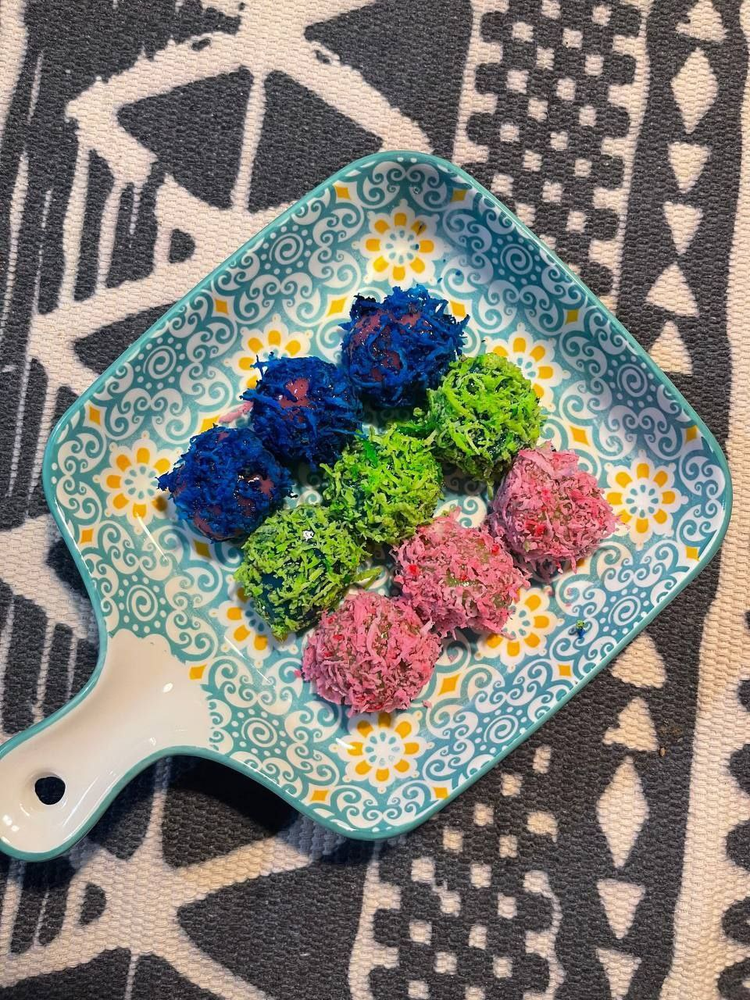

ABOUT ME Hi there! My name is Sheikh Adam and I'm currently a 20 year old student studying for a Diploma in Computer Science at UiTM Tapah. Here are some fun facts about me:

<
Before studying Computer Science, I used to be a chef and this is what I made for my SPM
My dream is to be a full stack developer (The languages I have coded before)